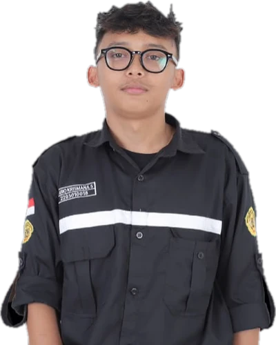
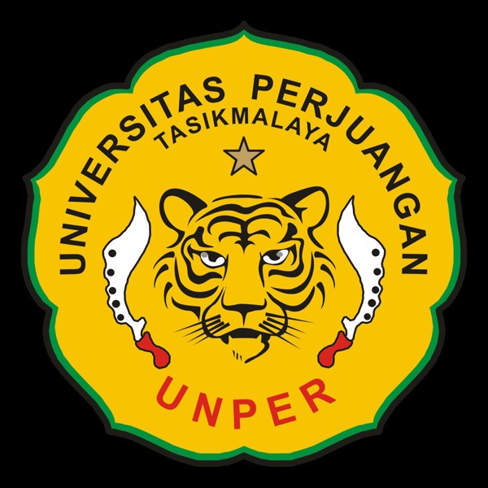
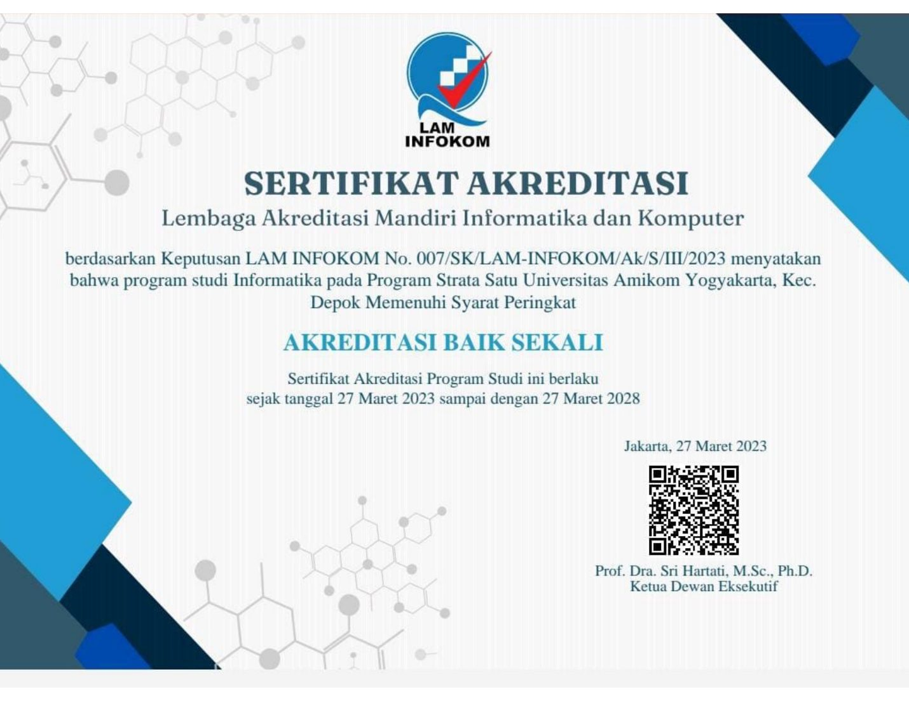
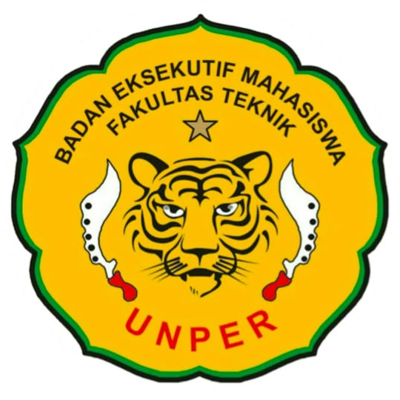
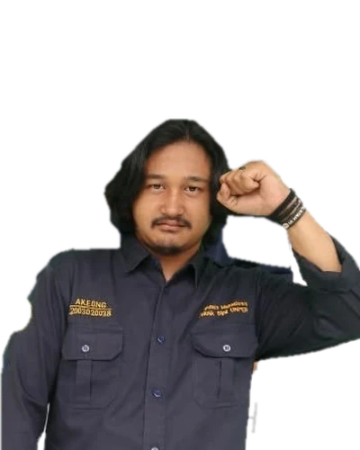
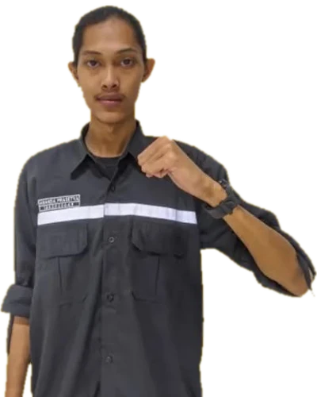
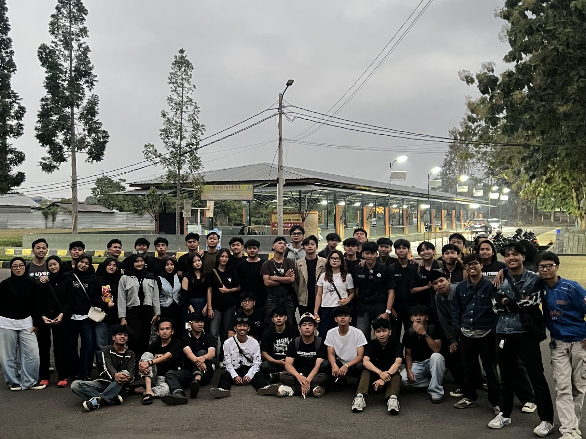
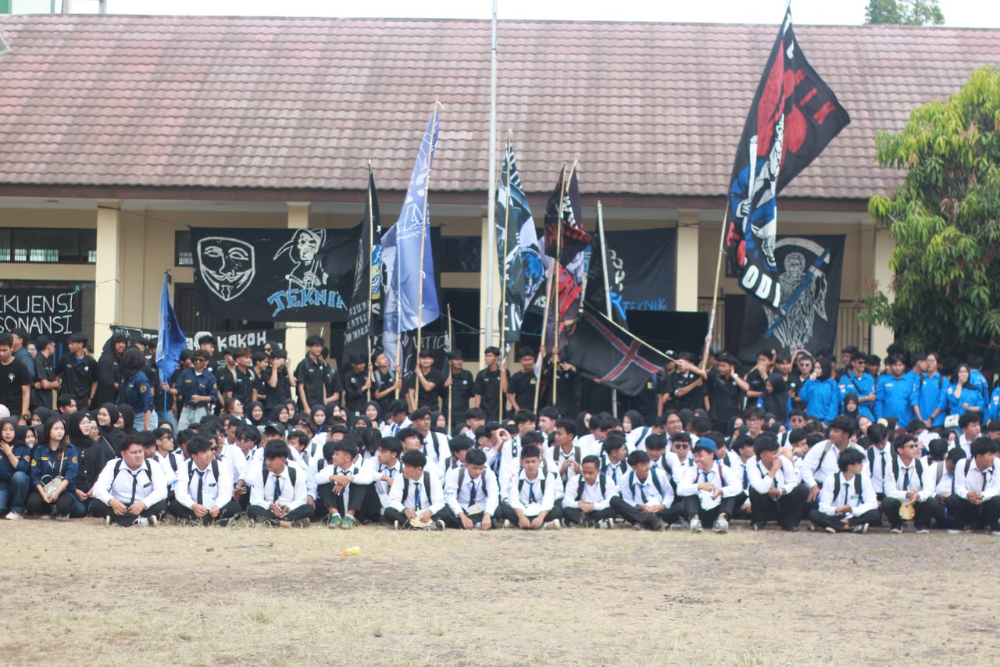

Mario Krismana Surya
Ketua BEM FT UNPER

FAKULTAS TEKNIKUNPER TASIKMALAYAProfil Fakultas
Pusat keunggulan rekayasa teknologi informatika dan teknik sipil yang berdaya saing dalam pembangunan infrastruktur berkelanjutan.
Fakultas Teknik adalah salah satu fakultas di Universitas Perjuangan (UNPER) Tasikmalaya, di bawah naungan Yayasan Universitas Siliwangi, yang berdiri sejak 2014 dan terakreditasi BAN-PT & LAM. Kami menyiapkan mahasiswa agar menguasai ilmu dan teknologi, terampil dalam praktik, dan memegang teguh semangat kejuangan.
Semangat itu tercermin pada lambang UNPER: harimau, bintang, dan sepasang senjata tradisional di dalam bingkai hijau-kuning.
Pimpinan Fakultas
Dekan Fakultas Teknik
Seluruh program studi jenjang S1 dengan penjaminan mutu resmi.
Beranda / Program Studi / S1 Teknik Informatika
S1 Fakultas Teknik

Catatan: Salinan dokumen sertifikat diperbarui secara berkala setelah penerbitan berkas resmi oleh LP3M.
Program Studi S1 Teknik Informatika dirancang untuk mencetak profesional yang unggul dalam rekayasa perangkat lunak, arsitektur cloud, sistem cerdas, dan keamanan siber berlandaskan nilai-nilai luhur perjuangan.
Prospek profesi & karir lulusan:
Beranda / Program Studi / S1 Teknik Sipil
S1 Fakultas Teknik
Catatan: Salinan dokumen sertifikat diperbarui secara berkala setelah penerbitan berkas resmi oleh LP3M.
Program Studi S1 Teknik Sipil mendidik sarjana teknik yang mahir dalam perencanaan konstruksi, rekayasa struktur tahan gempa, manajemen proyek infrastruktur, dan pengelolaan sumber daya air berkelanjutan.
Prospek profesi & karir lulusan:
Perkuliahan, praktikum, dan seminar teknologi bersama praktisi.
Riset dosen dan mahasiswa untuk menjawab masalah nyata.
Karya teknik yang bermanfaat bagi masyarakat sekitar.

Badan Eksekutif Mahasiswa Fakultas Teknik UNPER adalah wadah mahasiswa teknik untuk berorganisasi, mengembangkan kepemimpinan, dan menyalurkan aspirasi serta kreativitas.
Dari wadah inilah semangat juang mahasiswa teknik diwujudkan lewat kegiatan nyata di dalam dan di luar kampus.
Para ketua yang pernah memimpin BEM Fakultas Teknik UNPER pada tiga periode kepengurusan.

Ketua BEM FT UNPER

Ketua BEM FT UNPER

Ketua BEM FT UNPER


Sekretariat & Operasional